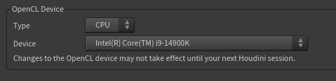
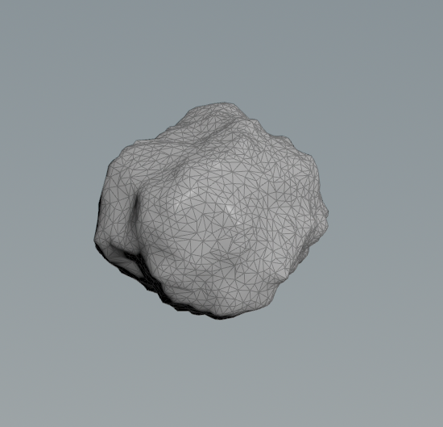
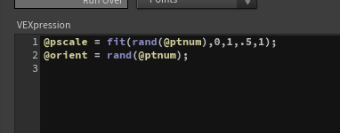
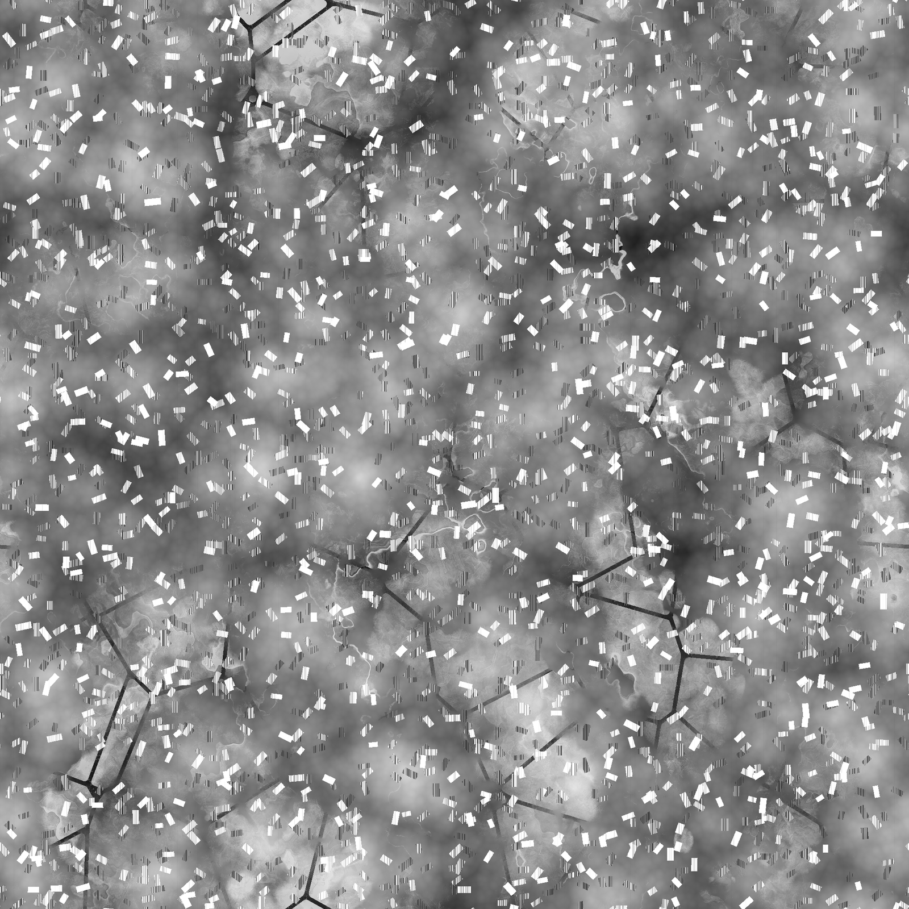
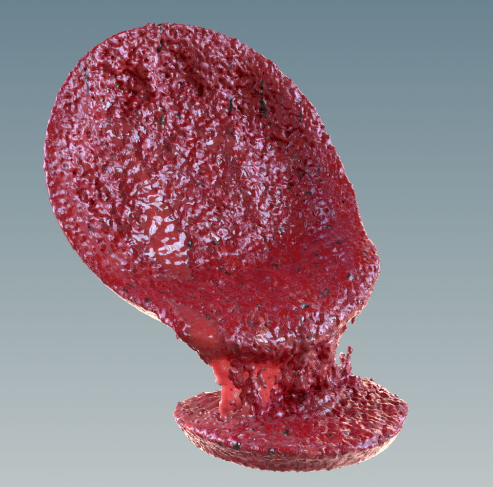
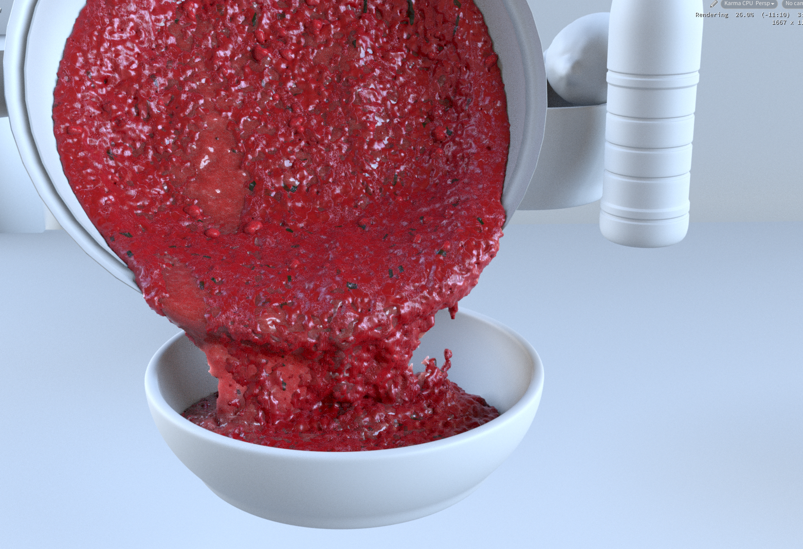

← 部落格 × VSFX728
待办事项：


已完成的事：
下周计划：
第 9 周
VSFX 728 － 第 9 周
大家好，这是我 VSFX 728 部落格的期末专案！
5 月 15 日
待办事项：
1. 找出 File Cache 失败的原因
2. 更换目前的发射源
3. 加入额外的发射源（番茄块和表面的油）
4. 测试材质，重点在酱汁
最终测试（特效）
我对模拟不太满意，因为参考影片中酱汁落下时更有块状感、更断续，而我的感觉太平滑、太流动。所以下周的模拟我想加入更多番茄块，让它更接近参考。
FileCache 失败
用 RTX 4090 无法稳定地做 file cache，所以我把 OpenGL 模式从 CPU 切换到 GPU。但速度很慢，模拟 500 格大约要 6 小时。

更换发射源
我从官方范例 MPMWaterGlass 得到灵感，更换了发射源。之前的设定需要更多时间让球体落下并撞到锅子，现在改成从锅子裁切几何体再用 PolyFill，节省了一些时间。
加入其他来源
我为番茄酱加了两层。第一层是番茄块，让流体看起来更有块状感；我也注意到酱汁表面有一层薄薄的油。


番茄块
我切下锅子的一部分作为发射源，再建立一个球体代表番茄块，复制到点上，并用 wrangle 节点让番茄块有不同的大小与方向。
为了替三个发射源指定不同的材质，我依照名称把它们分开。
油
油层看起来太黏、太重，所以我打算降低它的密度并减少发射源，让结果更真实。
测试材质（番茄酱）
我用 Substance Designer 制作程序化材质，也在表面加了葱花。时间允许的话，我也想加入洋葱，让材质看起来更真实。
这是我学习制作材质时使用的教学。
这些是我用程序化方式产生的贴图。（Base Color、Roughness、AO、Normal、Height）

这是我在 Houdini 中指定材质并测试的地方。目前看起来有点像塑胶，还需要想办法提升真实感。

